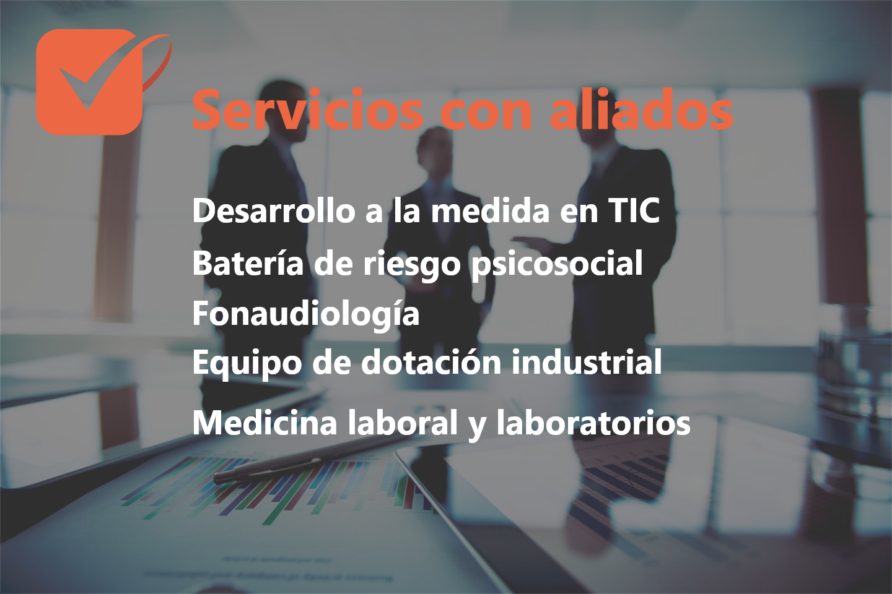

Mediciones ambientales

Dosimetro
El dosímetro personal es un detector de radiaciones de tipo ionizantes

Luxometro
instrumento que permite medir simple y rápidamente la iluminancia real

Medidor estres termico
Medidores que detectan la temperatura y la clasifican dependiendo de la humedad

sonometro
El sonómetro es un instrumento de medida que sirve para medir niveles de presión sonora
sistemas de gestión soportados en la plataforma Anova TS
